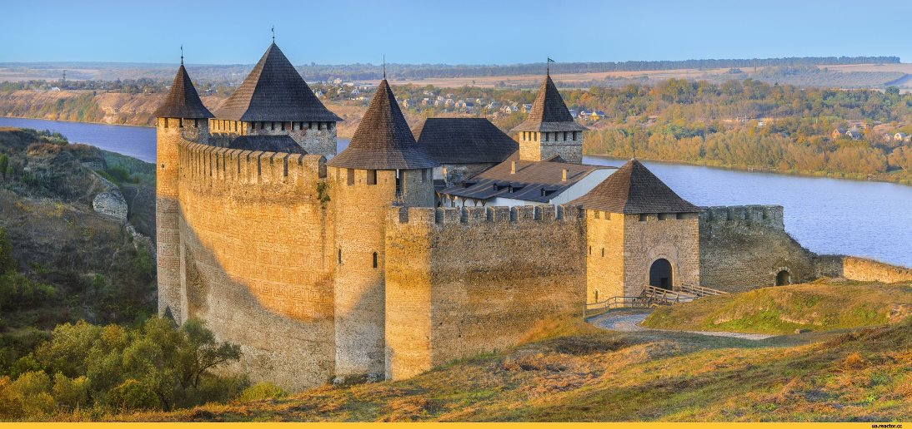
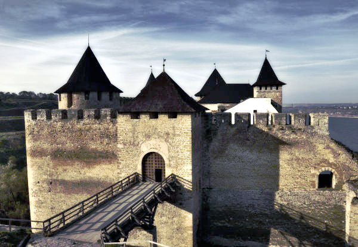
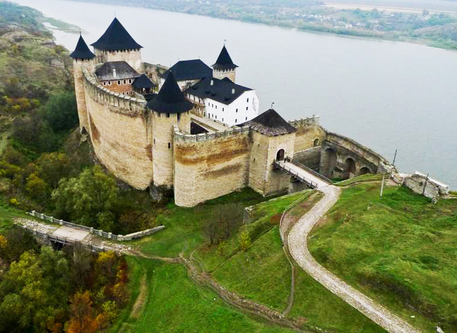

Цікаво, що ще від часів, коли фортецю добудовували християни, на височенних стінах збереглись незвичайні символи. Вони добре помітні навіть зараз.Візерунки є різних видів – так звані вавілони (символи зодчої мудросі) та голгофи (символи святої гори). Ці символи були священними для християн, та турецька культура не змогла стерти їх з лиця будівлі. Для цього треба б було хіба руйнувати стіни.Вважалось, що так древні символи справді захищали Хотинську фортецю, надаючи їй сили від Всевишнього.
Хотинська фортеця веде свій початок від Хотинського форту, що був створений у X столітті князем Володимиром Святославичем як одне із порубіжних укріплень південного заходу Русі, у зв'язку з приєднанням до неї буковинських земель. Форт, який згодом було перебудовано на фортецю, розміщувався на важливих транспортних шляхах, що з'єднували Київ із Пониззям (пізнішим Поділлям) і Придунав'ям.
Укріплення було споруджено на кам'янистому мисі, утвореному високим правим берегом Дністра та долиною впадаючої дрібної притоки. Спочатку це був замкнений земляний вал з дерев'яними стінами й оборонними спорудами. Завданням форту була оборона поселення Хотин і переправи через річку. Перша кам'яна фортеця була невеликою. Вона була розташована на самому мисі, там де сьогодні стоїть північна башта, та простягалася на південь до теперішнього комендантського палацу. Впродовж століть ця фортеця була таким собі «Феніксом», вона потерпала та зазнавала руйнації від рук завойовників і знов відбудовувалася, її неодноразово піддавали реконструкції та розширенню.
Наприкінці XI століття Хотин належав до Теребовлянського князівства.
У 1140-х роках він перейшов до Галицького, а з 1199 року — Галицько-Волинського князівств.
У 1250–1264 роках король Данило Галицький і його син Лев, перебудовували фортецю. Навколо неї з'явилися семиметрова кам'яна стіна та рови шириною до 6 метрів. У північній частині фортеці звели нові невеликі укріплення.
Привертає увагу і незвичайна пляма на одній із фортечних стін. Кажуть, її було помітно ще з XVIII століття. Про її походження вже складено багато легенд: і про те, що це сльози загиблої дівчини, і що саме у цьому місці була замурована людина під час будівництва. Насправді вологу пляму утворила олифа (такого висновку дійшли після експертизи). Більш раціональні дослідники схильні вважати, що дуже цікаве утворення виникло через селітру – складову пороху, який зберігався у замку.
У 1890 році поблизу Хотинської фортеці несподівано знайшли скарб. Це були різні монети із Саксонії, Тюрінгії, Чехії, Угорщини та інших країн. Більше тисячі старовинних монет, знайдених на українських землях, як би це дивно не було, зараз зберігаються у Санкт-Петербурзі.
Найкраще зберігся Хотинський замок.
Сьогодні на території Хотинської фортеці створено Державний історико-архітектурний заповідник. Тут полюбляють проводити свята козацької звитяги.
У 2010 та 2011 роках на території Хотинської фортеці проводився міжнародний фестиваль з історичного середньовічного бою «Битва націй». У 2012 році організатори вирішили провести фестиваль у Варшаві.